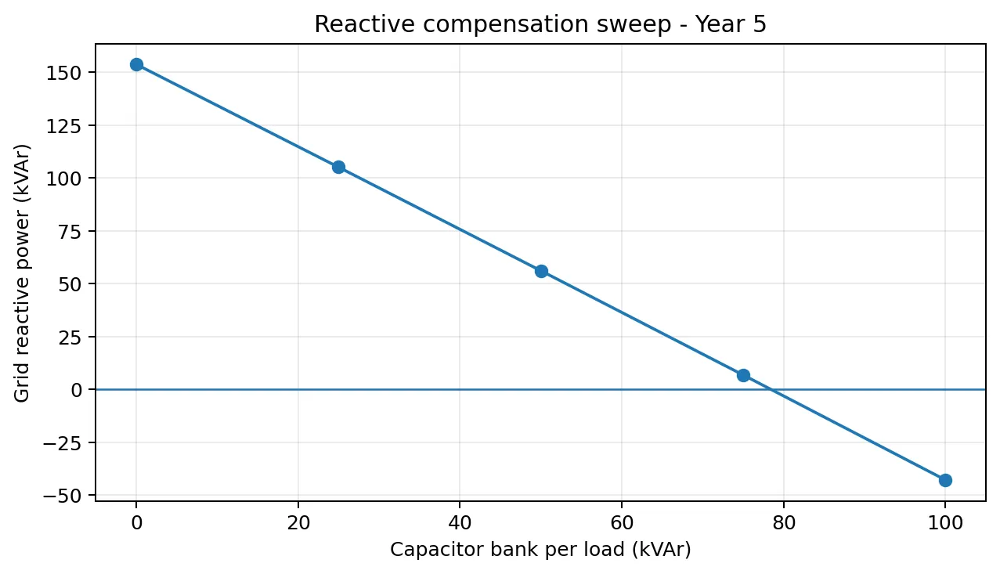
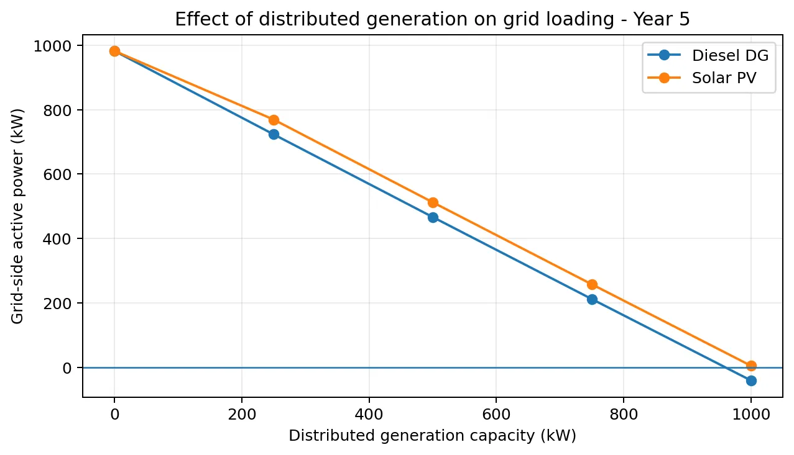

Overview
The OpenDSS model represents the subsection of a larger real-world distribution network assigned for the course project. Physical cable data, transformer loading and consumer information were used to reconstruct the section from the SEEPZ receiving station through GEMS No.1 toward GEMS No.3.
Five-year load growth
The Year-0 to Year-5 cases show active losses increasing from about 18.28 kW to 24.25 kW and reactive losses from about 66.63 kVAr to 84.11 kVAr as demand grows.
Reactive compensation
Capacitor-bank sweeps of 25, 50, 75 and 100 kVAr per load were tested. The 50–75 kVAr range reduced reactive demand and improved bus voltage, while 100 kVAr drove the network into over-compensation.

Distributed generation & PV
DG and PV sizes from 250 to 1000 kW were modelled. A 750 kW DG case reduced losses to about 3.95 kW; the 1000 kW DG case produced reverse power flow. The 1000 kW PV case reduced reported losses to about 1.26 kW while remaining just short of reverse grid power in the submitted case.

Source model
The project archive includes the original OpenDSS cases and exported result folders supplied with the submission.
This page deliberately describes the work as an assigned network subsection, not the complete parent distribution network.
Source material
The project narrative above is condensed from the submitted coursework/thesis and keeps design estimates, simulation results and demonstrated hardware distinct.